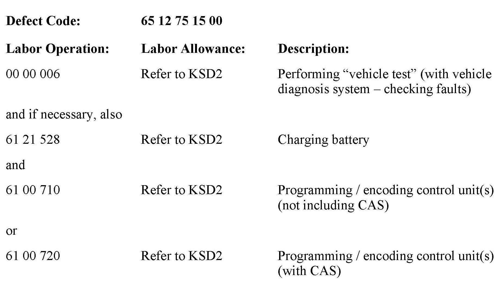

Cell Phone - Voice Recognition Inoperative
SI B65 05 13Audio, Navigation, Monitors, Alarms, SRS
March 2013
Technical Service
SUBJECT
Basic SVS: Voice Recognition Inoperative After Programming
MODEL
E82
E88
E89
E90
E91
E92
E93
Produced from September 2010 to March 2013 with option 663 (Radio BMW Professional, RAD2+) and option 6NN (Hands-free Bluetooth)
SITUATION
After programming the vehicle with ISTA/P 2.48.x, the voice recognition (Basic SVS) is inoperative.
NOTE:
The Basic SVS only includes voice recognition for phone functions.
CAUSE
Error in the coding data of ISTA/P 2.48.x.
The voice recognition function is unintentionally deactivated.
CORRECTION
Do not replace parts.
1. Perform a vehicle test using the latest ISTA diagnostic software.
Note:
When the ISTA system message displays: "Battery voltage only "XX.XX" V. Please connect charger." Please note the displayed battery voltage reading in the repair order comments section.
2. Reprogram the vehicle using ISTA/P 2.49.0 or later.
New integration level: E89x-13-03-501 or higher
3. Complete all of the post-programming work as indicated in the ISTA/P Final Report. This includes performing diagnosis and clearing faults with ISTA, if necessary.
Note that ISTA/P will automatically reprogram and code all programmable control modules that do not have the latest software.
For information on programming and coding with ISTA/P, refer to CenterNet / Aftersales Portal / Service / Workshop Technology / Vehicle Programming.
WARRANTY INFORMATION

Covered under the terms of the BMW New Vehicle/SAV Limited Warranty.
Labor operation code 00 00 006 is a Main labor operation. If you are using a Main labor code for another repair, use the Plus code labor operation 00 00 556 instead.
Refer to KSD2 for the corresponding flat rate unit (FRU) allowance. Enter the Chassis Number, which consists of the last 7 digits of the Vehicle Identification Number (VIN). Click on the "Search" button, and then enter the applicable flat rate labor operation in the FR code field.
If a control module fails to program correctly or initializations are required, the additional work must be claimed with separate labor operations under the defect code listed above; refer to KSD2.
Other Repairs
If performing other ISTA diagnostics and the related test plans results with eligible and covered work, claim this work with the applicable defect code and labor operations listed in KSD2.
Note:
Please follow any TeileClearing (TC) or Diagcode (DC) requirements that may apply to this additional work.